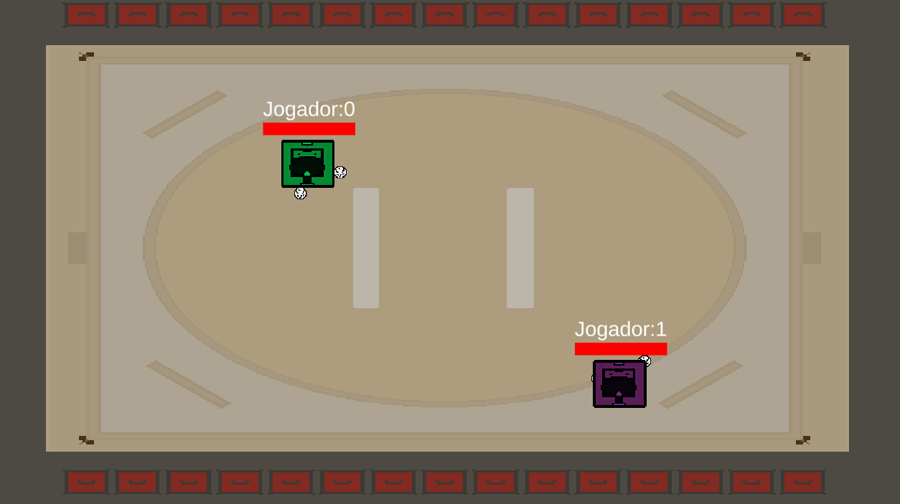

Projeto Netcode Multiplayer
Autor:
William,Eduardo,Felipe,Uriel
Data de criação:
2022
Estilo:
2D top-down
Genero:
Ação
Motivação
Este e um projeto open source para testar uma nova funcionabilidade da Unity, o Netcode é um asset da unity que permite o multiplayer e troca de dados via internet pela Unity, e este projeto que programei utiliza de tudo que o asset disponibiliza alem de uma explicação nos scripts de cada coisa que esta acontecendo
Gameplay
E um simples jogo de desviar da bolinha, controlando o player com o teclado: W,S,A e D alem de poder conectar multiplos jogadores via LAN, colocando seu Ip no lugar necessario e client se for ou Host se for criar a sala. O jogo e simples mas como e feito para multiplayer a logica por tras pode ser bem complicada.
Engine/Linguagem usadas
Para este projeto foi principalmente utilizado a Unity3D, como comum desta desta Engine, a linguagem que mais utilizamos foi o C#